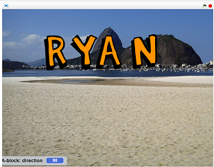
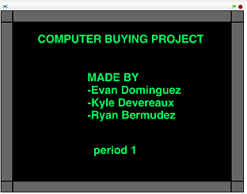
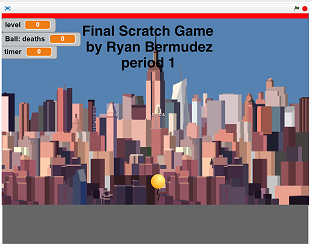

Scratch Content
Name assignment

discription
We used scratch to animate the letters of our name so that they change color, position, orientation, etc. This project was an introduction to scratch and how it works
Concepts Learned
Using event blocks- green flag clicked?/ when key is pressed?
Forever loops- to make it constantly repeat
Sprites- created my own sprites using the sprite editor
Movement- i used the x and y value inputs to make my sprites move
Costume change- i used the costume change command to make a letter look different
Computer Buying Project

discription
we found the most optimal computer for kyle’s mom and made a “slideshow” in scratch showing the comparison of the computers we chose and the most optimal computer.
Concepts Learned
Hide block- we used the hide command to hide sprites when they weren't being used
Glide- we used glide to make transitions smoother
Text sprites- we used the text sprites to display information
Event blocks- we furthered our knowledge on the events
Final Project

discription
We applied everything we learned in scratch and made a game that applied more advanced scratch coding techniques and creativity on how to make the game, how to play it, etc. This was the most advanced scratch project we did
Concepts learned
Broadcast- we used broadcasts to speed up communication
Custom blocks- we used this for organization
Variables- we used this for overall control of the game
Sprite interaction- we learned how to make sprites interact with and understand the movements and patterns of other sprites